It is volume III of one weird book: 0 1 2
(this part is not only raw but also sometimes repetitious, because it's a draft, and in drafts I revisit the same topic again and again as goldminer returns to his mines)
א angel, a-l
ם me, мы and if we compare it to left & right, שםא is how we see others, אםש is as we see ourselves.
We don't know in what language these structures appeared, so any language will do. They're all synonyms across languages, so some words forgotten in one languages still live in another.
don't be surprised on following rawness, for I research it as I write.
This revelation of three mothers being birth (бог?) - man (me) - w looks like ש and ת could be z, though this similarity is probably caused by common similarity of alphabetic lines.
If it's M & W is it man & woman? because I wanted to speak of Man & Wile (Ewil.. so Eve it is. I told you Deva & Eva are Devil & Evil. It's all yin/yang.) Бог, Мэн, Уоман - такие же три первых настоящих персонажа в библии? Я снова возвращаюсь к библии. Хаха, я начал с Сейфер Йециры, Ш юю...
allows us to say that א is not soil, but air, as Sepher Yetzirah said. Yet if א is air, in the context of שא & מים it's שמים. Which makes א a derivative of ם & ש. If you only knew how difficult it is to combine semitic to european scripts, הmans fought beasts before they conceptualized a good god. Though reading what they've conceptualized about them may make us respect them somewhat less. Though soil, not air is the more common among elemental systems, what if it's the both. Air is the product of the earth, without the soil there would be no air. And ש is the chaotic energy which is some other force, and it makes us guests from space? Otherwise we would be the Earth itself. And are we not? We ARE! water is also earth? if air is earth, water is also earth. Isn't fire from within (and from the sun as well btw) a crucial part of the formula? It IS!
And they say that trinity is the one.

And I go on with my research:
Х ~ Ж if we recognize X as stavless Ж, ᚷ as stavless ᚼ
Also because J can be read as Ж [j] in french, but as ᚷ [h] in spanish
And position of russian Ж correlate greek H (and Z is after it, not in front as in greek. So does it make greek later relating to russian? In russian second row Z stands in the end, not in the front, but do russians have F after E? No, but Ё. (I spoke about it whether in this version or look for older ones in web archive)
ᚷ as stavless ᚼ exp;ains hot ~ жара and makes me believe that's the same t as in to, which comes ть in russian & る in japanese. (I)t seems to come ra in russian, while in verbs it's still tt. ротацизм сюда же.
co and go are invariants, and I suppose me in come is literally me, which make it two different directions.
Here's something I've put into chapter of swastikas, but it was after I spread this text, so you could miss it:
one benevolent witch taught me that swastikas are not lucky and unlucky, but male and female, I guess it's all yin-yang thing, and though sun goes sunwards, she told me to look at ursa m??or.
And she's right, northern sun is on the south and goes rightwards, which is explicitly clockwise when it's high in the sky, while the northern sky itself rotates counter-clockwise. I suppose sun is the man, while sky is shy, she, the one which embraces him in der himmel.

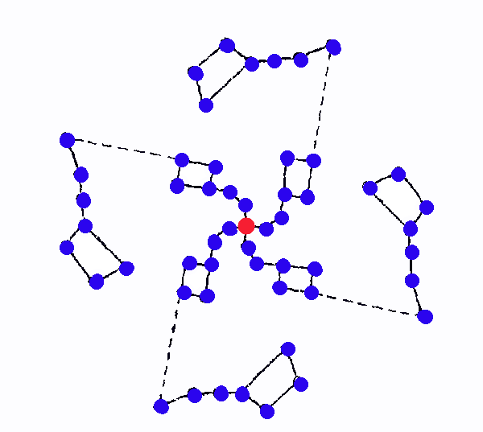


Путеводная звезда не луна, а полярная? Луна календаря, Солнце часов. Полярная для навигации
А какая планида отвечает за дни недели? 7 солнц.. может это именно что абстракция, как метр.
4 времени года, 4 недели в лунном месяце. 4 фазы луны конечно же! 4 времени года совпадение, что наш разум двоичен, и может ещё среднее найти, если цикл, то средних два. вот и получается, что 3 части и(у) линейной прогрессии, а 4 — у цикличной (год, месяц.. а что такое час, минута, секунда может быть сердечным ритмом, т.о. календарь с часами привязывают наши циклы к космическим)
ut re mi fa sol la ti?
lati utre mi fasol!
bott end with l
both ends are l as if gamut was a ring (a ring of a spiral it is)
look at how it go on piano keys and you see where's that L (between sol & la))
but untremifalsol.. utremifasollati is alphabetic:
ut is the only note beginning with vowel
re is vowel in hindi & srbsko-hrvatski.
mi & fa are the only ones beginning with labial
sol la ti are all lingual.
ti reflects archaic T of ת
I didn't expect to find it when I began this paragraph.

as you can see on the following images, the lack of B, B/H discord, could be caused by B whether being prohibited (them I'd bet it was connected to tritone being prohibited, but I can see its tritone is neither to A nor to C, so it could be not) or to who knows what secret is hidden behind this misconsequences.
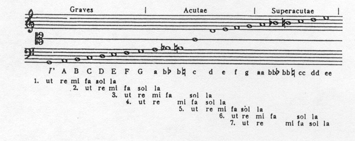
on this one we can see si or ti as te:

yet on this one we cannot and many musicians I asked about H didn't know and didn't seem to ever wonder

notice that H & B are invariants in japanese. Can it be connected? nah..
let's collect some more of these:

and this image is clickable (I'm going to link my images
more often from now on) and that link has brought: seculorum. Amen, often abbreviated EUOUAE.
it's some tool to denote syllables, I have to read it
myself and will return to this topic later.
Surprise is that in my own city lives another kid who've found something incredible in russian alphabet:

(clickable)
We see K breaking sequence once again (does it mean it wasn't tabooed, it wasn't invented in those ancient abecedarias of some archaic latin (I'm not sure that period is named archaic, you look it up yourself if you care of the exact taxonomy)
Also П can be an invariant of R which would go farting (the sound only some most ancient native americans lost in the jungle speak this sound. That 3-vowel tribe, I wrote about them, I don't remember the name.
This sequence of voiced-sonors-voiceless. Is not present in english, but we know that G is invariant of C and that C used to sound like G, at least I read it.
It is arranged as if students begin loud and clear in voiced forms of the letters, but getting tired their voices became less clear until it switched off completely and only wisper would come out. O & especially У are way more tired than A & E, vowels could also influence the enthusiasm of pronunciation. So it could be either appear this way naturally, or be arranged this way to ease the reading of the alphabet.
Let's see if such a sequence is present in any of other alphabets.
latin:
A B C D E F G H I J K L M N O P Q R S T U V W X Y Z
greek:
Α Β Γ Δ Ε Ζ Η Θ Ι Κ Λ Μ Ν Ξ Ο Π Ρ Σ Τ Υ Φ Χ Ψ Ω
compare to russian:
А Б В Г Д Е Ё Ж З И Й К Л М Н О П Р С Т У Ф Х Ц Ч Ш Щ Ъ Ы Ь Э Ю Я
in that row, namely T. and because QR look like diacritic OP.
and russsians take P for R (Р)
hebrew:
is somewhere near greek:
the only difference is that postionian greek doesn't see H as [h]
and that hebrew includes some additional letters (surprise!) but
they are voiceless, so who knows maybe it tells that they follow
this voiced-voicelss tendency more.
So is it just a coincidence, which became quasi-structure in one
of them, or is it common among all of them one way or another.
I would look for some structural tendency if latin shows no
tendency of having more voiced in the first half.
But P instead of B, T instead of D, I think this voiced-voiceless is set from the initial ABD/VFH
but let's conduct the experiment:
A B C D E F G H I J K L M N
O P Q R S T U V W X Y Z
Еven in latin second half has more voiceless letters, but it's on the brink of losing this tendency completely:
First half contains 4 voiceless: CFHK
Second half contains 5 voiceless: PQSTX (even though the second half as we broke it is 2 letters shorter)
And if we cound voiced, then
First half contains 7 voiced: BDGJLMN
Second half contains 5 voiced: RVWYZ (and if we count VW as 1 & Y as vowel, even less: 3)
But if we remember that LMN are the beginning of the second half of the alphabet (as official etymology of "element" tells) then it's only 4 voiced in the first half, and even if we exclude W & Y it's 6 against 4, which breaks the tendency.
J I H G F E D C B A
K
L M N O P Q R S T U V W X Y Z
But M is named as central letter, but even if we count J,
A B C D E F G H I J K L
M
N O P Q R S T U V W X Y Z
well, in this case first half has 5 voiced, and the second - only 4 (but if we turn W back on?)
It could also happen this way in latin because of some reform of sharing the voiced through the structure, not to make the pyramid way to obvious that bottom doesn't have a say.
Anyway, latin is an exception among those I've seen above, let's look into georgian alphabet, to see if it's just some hellenic fluctuation or some truer symmetry, which could be cause by BD PT of some ancient unknown alphabet, mama first papa second, baba dada also go this way, and if some southern nations call papa baba, this deserves its own research.
The reason I throw away R & not P is because the grapheme P is known in both latin & russian & greek, while R is only in latin. Also cursive k is even more similar to R than K and we need P as labial in our common structure of ABCD (notice that ABC also has voiced before voiceless)
then russians have П but no Р (could russian Р be invariant of П as if it's voiced form, even though it wasn't voice but bright vibration of lips. So could be R voiceless too (then we don't have to exclude it here) for it's brightness is not necessary on vocal cords, for it comes from tongue & alveols?
georgian:
ა ბ გ დ ე ვ ზ თ ი კ ლ მ ნ ო პ ჟ რ ს ტ უ ფ ქ ღ ყ შ ჩ ც ძ წ ჭ ხ ჯ ჰ

this image includes ჱ ჲ ჳ though they were excluded from the modern I gave above it, and it doesn't have ჯ
and also excleded ჵ ends it with few more signs I don't recognize.
Surprisingly, in georgian voiced-voiceless tendency is less preserved than even in greek & hebrew
(or is it, on contrary, promoted) for not only R but several other voiced letters appear in the second half.
Still it's more obvious than in latin, especially if we split it as it is, however we break it the most of voiceless are in the second half. But if M is the central letter, both halves have the same ammount of voiced.
In conclusion to this paragraph I have to say that this tendency is definitely present, but if it's artificially conceived or has it occured naturally this is almost impossible to say, probably reformers of russian alphabet noticed this tendency and fostered it a little.
This tendency also supports the idea of russian В being placed in the place of F, for it could be voiced before, they say it used to be W - semitic vav is voiced. And В looks like θ which used to belong somethere.
Let's look at all of the sudden spectacular russian if we consider Р [r] voiceless (whisper of r is r)
it's only K out of structure. And the border exactly where that roouh saw it: (I also write mahead with m)

Though If I understand Р (Russian R looks like P) as voiceless because it's whispering has no pair, and thus voiceless M is also M. while voiceless BDGJVZ are PTKCFS (C here is Ch, for only K is always K)
Then we can understand russian alphabet as
А Б В Г Д Е Ё Ж З И Й К Л М Н О П Р С Т У Ф Х Ц Ч Ш Щ Ъ Ы Ь Э Ю Я
was it logic of those who placed sonors among voiced & voiceless? let's look at those sonors:
А Б В Г Д Е Ё Ж З И Й К Л М Н О П Р С Т У Ф Х Ц Ч Ш Щ Ъ Ы Ь Э Ю Я
and in halves:
А Б В Г Д Е Ё Ж З И Й К Л М Н
О П Р С Т У Ф Х Ц Ч Ш Щ Ъ Ы Ь Э Ю Я
and I was thinking the other day: " what if Ф is initial form of P, because there's no Ф in latin, but that's not what my thought began with. I began with looking at runic labials: ᛒᚠᛉ and even ᚢ all are dual. except P, which is neither in the bornolm runic alphabet (named by von List as armanen runes)
So what if these two rows are voiced & voiceless and as genomic apparatus checks for mutations comparing two strings, we can reconstruct earlier phonetics of those alphabetic signs.
А Б В Г Д Е Ё Ж З И Й К Л М Н
О П Ф С Т У Х Ц Ч Ш Щ Ъ Ы Ь Э Ю Я
but the counterpart of Ж is Ш
А Б В Г Д Е Ё Ж З И Й К Л М Н
О П Ф С Т У Ш Щ Ъ Ы Ь Э Ю Я
There's now now labial after У, but only because there's no labial after EЁ
but it's F after E, and it's Ф after У
but Ф is already used. but what's use of the two voiced after O? Ф may be used instead of P, then why П?
let's look at latin once again:
A B C D E F G H I J K L M N
O Ф Q R S T U V W X Y Z
most of the voiced mess is in the final line (we russians have all final line of vowels, what is your voiced)
so let's look at it in the ancient form:
A B C D E F G H I L M N
O Ф Q R S T V
V could reflect F for some reason: Vav is voiced F, V is read as F in german: von sounds as fon.
A B G D E F
O Ф Q T UV
what is it? two octaves? but they're in sixs, not sevens. could it be related to 6 being so popular among heathens? Are those 6 reformed pentatonica? Then 7th note would be the further reform (maybe even from some other confession)
So what was the initial form of those two "octaves"
A B G D
O Ф Q T
Ф is long P, double P. (B is read as V (in greek & russian) and pey and fey are the same letter in hebrew)
then B is doubel b (B is v in russian, Б is b)
so now there's 8 of them. could it be where the word octave comes from?
now these two lines are in abcd mode. let's look if they can be in axial:
A
B G
D O Ф
Q T
actually yes. and V is envoked by it.
A
B G
D O P
Q T
V
Shouldn't I make up my mind if V is labial consonant or vowel? But it is both, in different cultures it's both, and sometimes it's in the same culture both (as vav in semitic languages, even though both lineal & axial symmetries recognize vav as labial consonant, and maybe that's why both و & ו stand for "&" and both are consonant labials: و is wъ, ו is v, and we can see that more modern arabic has drifted more towards vowel u, and today ו can be used also for u & o, but to make it o (literally "or") we have to put aleph before it: או, which reminds me of יהוה being transliterated as Io, which reminds both greek deity (and I'm not exactly sure it's the same Io whose priestess invented alphabet, but wth, of course it's her) and polynesian highest deity of a cult very similar to judaism, I think I've already wrote about it, and I think I wrote that ה makes ' & ו vowels, but isn't י vowel by default? Those who know hebrew probably laugh at me right now.
that abgd-opqt pair keeps v vowel, and yet I'm not sure this reconstruction reconstructs any representation actually existing in the past, roouh begins with one ancient russian abecedary, and look at it, it breaks the alphabet in half exactly between voiced & voiceless (wonderful thing is that k is missing, and it doesn't seem to have enough space for k:
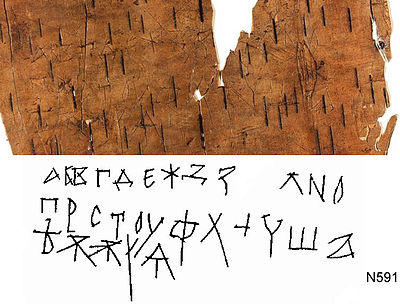
though it could be a coincidence, because he puts о in the previous line.
א ב ג ד ה ו ז ח ט י כ ל מ נ ס ע פ צ ק ר ש ת
tells me that if that voiced-voiceless order is the original one (it's more present in hebrew, than it is in latin, and it is somewhat general that voiced tend to gather in the beginning of the alphabet (B is voiced, K is not, so now let's look how it is in eastern ones:

they all are voiceless by default and ゛ makes it voiced (only the sonor ones are voiced already: m, n, l/r
wait a minute, there are more of those: it goes a ka sa ta na ha ma ya ra wa n
 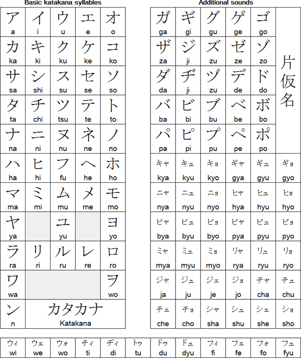
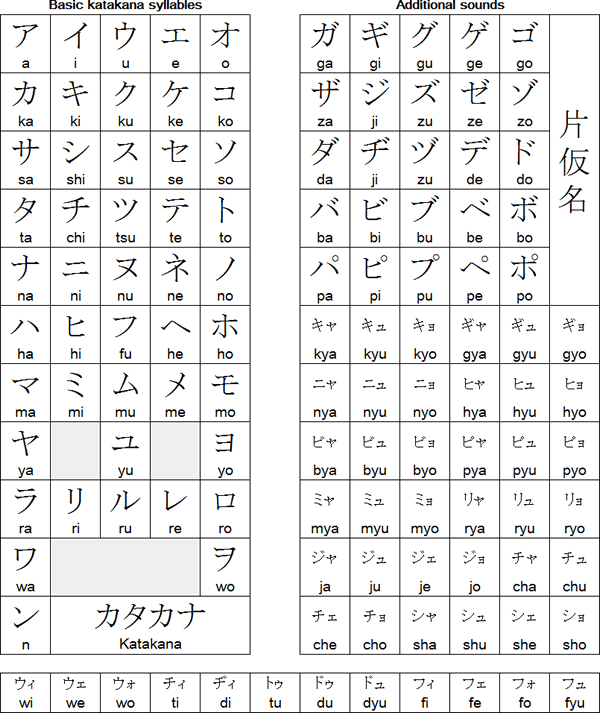so it's definitely voiceless (those to which ゛ can be applied) in the front, sonors (voiced by default) in the back. it breaks between ta & na & only ha goes exceptional, and it is exceptional, because it can be applied with ﾟ to make p- but it's b when ゛ is on it's right upper corner, but it's more funny than this, because that ha is more weird than that: it's wa most of the time: boku wa baka gaijin desu, sumimasen, this wa is actually that very ha, so if it's wrong that it's ha or not, it's exceptional, and other than that mayarawan are all sonors, and kasata are once again remind second half of the first raw: as if ha was replaced from it's honorable position. ahakasata - is it how it was? because I was already seeing things like aka satana (akai is red in japanese, and -i suffix is the same as russians use for adjectives, and russians sometimes just don't use that suffix to create so called "short adjectives" which may tell that adjectives are as ancient as nouns and verbs. red can be even more primal than raid.
But back on track, what I wanted to say is
א ב ג ד ה ו ז ח ט י כ ל מ נ ס ע פ צ ק ר ש ת
arranged as voiced-voiceless may present its primal form:
א ב ד ה ו ז י מ נ ע פ ת
as four representations of the same two letters, as sillabaries do, but this time with only 4 vowels & 2 consonants, even before 5 vowels, B and T
You can notice that this way they're grouped according to IPA into plosive, fricative, nasal, whisper. IPA puts B&D in the same group, and D&T too, so I named those voiceless whispers by miself. Which may witness something about the jewish vowels themselves. Is O a wisper form of A? Because ע is related to O. It could be more related to У, but it stands at O position. Though if we compare the final line of jewish alphabet with У line, we get У as ע and Ф as פ which is direct transliteration and Х as צ which is weird, though cursive צ looks like З (there's no unicode for cursive, so watch it up in that .odo addon) and initial X does sound like Z. Ц as ק which is equally weird, though C could stand for both, Ч for ר which is quite a coincidence, because cursive ч looks exactly like cursive r - is it why they call it cursive? as of curse, the script which made them misunderstand one another, tour as cour? Ш ש which is exact transliteration again, Щ as ת
which is just wonderful, because after that go some weird theatre of vowel row, beginning with silent special sign named "hard sign" (твёрдый знак) and graphically ъыь remind 666 as much as uvw remind it in other domains, but I already wrote about it.
How I reconstructed that
א ב ד ה ו ז י מ נ ע פ ת
is I began at the ה ו ז ח ט and removed the messing ח ט because we don't have these two in russian (is it an argument enough? but what if russians had alphabetic canon before christians, and though I only shyly attempted to notice this possibility (because they were caught redhanded in this sort of crime of claiming authority over something they didn't author)
after that it was clear that has to go (because bornholm alphabet's first row only has ᛒᚦ instead of BCD, because of b d symmetry shining on so many levels: BD, –ë–î, ‚∞Ç‚∞Ñ, ìÉÄìÇß and even ◊ë◊ì are probably here, but —Å–°–ì‚∞É(ìàéìé°ìéº)◊í never plays this game, which makes me think it should go from the protoalphabet (it also didn't exist in that mythic 5 vowels, B & T, and also only latin alphabet has velar column distinctly, unlike the others)
I knew M had to go first, an we still have N following, which marks L as invariant of I further in history than N as invariant of I (И) if it even is, for if it is, M must be an invariant of И too, which would be super weird, because I is lingual, and M is labial. but AIU correlate AMT if you even know what I mean, I think it's one of those moments when I'm so high in that depth, that even me won't be able to make sense of this.
So here I already had a distinct pattern, so to determine which of many voiceless sounds of the fourth and final row go into my reconstruction of protoalphabet wasn't difficult at all. P & T of course. which is kinda sad, because I expected to see this bd
pq in the first draft of it. Is T secretly Q? Then D is secretly C, and what if they write чево as чего only to entangle that subject even more. There's no "they", they don't know shit.
and what about אמש? same, truth is אמת and ש is for שטן
then what is S on the chest of Supermensch?
Roman secunda is 24 times longer than ours
Does it mean one hour in their system was a term for a day?
Година is hour in ukrainian, but year in russian: год is year to be precise, so russians would understand година as год.
Is it why "сейчас" (now) is more likely to mean "сегодня, сего дня" (today) than "сей час" (this hour, tohour) - well, no, сейчас сегодня собраны по одному принципу. сей и сего - просто в разных падежах. Но разве разница в падежах не являет иную грамматическую форму? если бы их собирали одновременно, то сейчас, сейдень. "Сегодня" более изысканно флектуатическая структура, а значит она с некоторой вероятностью была собрана позже, потому что "сейчас" это китайцы так слова собирают, а они законсервировали грамматику на самом раннем этапе из всех что я знаю. И я считаю что это свидетельствует о древности их письменности и языка. Could egyptians just combine chinese & meroitic principles for political reasons and so (fo(r) to so - бо which is ибо, or is it too wild to mix languages in one выборке? I don't know I write if as my own draft, so I use both languages, co is form of go, or visa versa, and if -me could be me, fuck ''''s, co is not russian ко, к, semantically they are different. but "на хуй" (на ~ к) has semantic values of go, So I wanted to prove that come is not ко мне, but instead I found verbal features in prepositions) both communities could read the text? (that grey text before it went into something important, read at least the end of it: prepositions may have verbal values)
Ни сегочаса ни сейдень не замечено, кроме фразы "по сей день" ((up) to this day..)
but back to that outstanding claim that prepositions have verbal meanings:
пере = пр(ыгай) (s)pr(ing) pr(one) (прыгает на)
but also пырять. you do understand how easy it will be for them to ridicule you here? he who's affraid to look foolish doesn't have a chance to become great, so they say, the other they.
у- stands for something like away (and for way in "way (too big)") notice that it's у [u] common between away & out, which in russian is вон, прочь, от as direct cognate of out, which corelate it with off and of.
Which made me think of u- (especially initial one, or even any initial vowel) to inverse what follows: out = of, idi = go (idi is go in russsin: иди) and there probably were some other examples. I reallly have to scan those notebooks. that very k appears in japanese きて (kite) and 来る (kuru) both -te & -ru are verbal suffixes. (ru is pretty much english to, put as postfix the way russians put -ть and even -те (literally te) also notice how て looks like t, I'm pretty sure there's more to this than just coincidence.
至る (itaru) is another translation, and though it also stands for "through" if it's written with another suffix, 至て, it's itate, which reminds me of russian идёте [idöte] and not to look like idöte myself, I think I will leave these comparisons to some passionless statistical ai. I think those guys can make some awesome job using the brave approach I offered here, comparing all the languages globally, ignoring all the human-made definitions, reconstructions & divisions into families or whatever. And then maybe even other animals' languages will be compared with ours.
This alphabet which is persian, not arabic (arabic lack few of these)
ا ب پ ت ث ج چ ح خ د ذ ر ز ژ س ش ص ض ط ظ ع غ ف ق ک گ ل م ن ه و ی
is also alphabetic if you watch at the first letters in the groups:
ا ب ج د ر س ص ط ع ف ق ک ل م ن ه و ی
all I was going to say is ه و look like E F when they're written in a different font: هو
(you should try to type mixing hebrew or arabic with latin or russian, it's a mindf
Notice that having removed the doublets, we got ourselves 18 letters, which is a magic number of 3 sects
(sects are aettir but of 6s)
sso is 6s & 8s the same old war for geometric forms (arabs adore 8-poiinted star (it's united) while jews prefer 6-pointed star (it's separated)
6-pointed star is probably historically more ancient (it's both less points, 18-letter alphabets are older than 24-letter ones, judaism is older than islam) but 8-pointed is also a cross. and sun shines mostly across (but it's because of the effect our eyelashes create (because sun rotates together with our head, and the cross is seen when eyes are half-closed, otherwise sun goes all the way)
The idea of separation of the alphabet into voiced & voiceless can be used as an instrument to deliver the previous form of the alphabet:
ا ب ج د ر س ص ط ع ف ق ک ل م ن ه و ی
First I noticed that this way we have vowels in the end (as russians coplete it, as greeks had omega, as runic alphabet had ᚢ (v, u (oo)) and roman alphabet had V, v (v, u) and russian alphabet had Ѵ, ѵ as finals)
And just before those vowels ن [n] stands and in greek minuscule [n] is ν
and after jewish נ [n] stands ס which looks just like ه - could there be some cultureal correlation (and the script is of the same size, but hebrew is extra large in the text, otherwise it was really small, and arabic is in normal size (as is all this text) let's make it extra extra large and compare them:
ا ب ج د ر س ص ط ع ف ق ک ل م ن ه و ی
ا ب ج د ر س ص ط ع ف ق ک ل م ن ه و ی
ه stands where ס does. and they look the same, and I hate to diss your concealium, consealium, what is the word.. concilium, but I must notice that after n o fololows, and it looks exactly like ه and ס especially if you know they're backwards. So who's reading those texts wrong all the time?
ه is definitely closer to o than ס, especially if you transliterate it into jewish ה which stands where e does, not o. but in arabic even though ه is closer to vowers than ס is, which also reminds greek σ - which resembles o just strikingly! and σ has it's own story of how Σ looks like E and that school=ecole, student=etudiant, and some more examples of the kind there is. scream just gets rid of s or e, and it's cri
and even though it's not greek, but french, just as sign languages don't correlate speaking languages, so writing systems can be not corresponding with the languages they're used for, hence this babelonian mess I'm disentangling here.
and ◯ could be a holy symbol, named by different nations differently, and thus... just a speculation
but if ه is sun, و can be the moon
and they stand together in the second row, where E & F do, and F is moon, because it's not always full.
and F is connected with fornication, and moon is the night, which is more proper for sex, and it's literally 6
and 6 looks like و, though 9 would fit more. And if we count it backwards from و, we may find that if و is 9, then 1 is ع which opens the second half of the alphabet, only it not begins, but ends with LMN. And it's 10 of them in that second half, and the first half is of 8, and if we abruptly exclude 9 & 10 from the second half, we'll get alphabet of 16, as that "younger futhark" - I believe it's literally younger than it's older form, like when the system wasn't developed enough, when it was young. see the mindf/?
and the final letter looks like 。 which is as ◯ named maru. and 。 is japanese . and dot is how one of ugaritic alphabets end (I never saw the artefact they took it from, but it's there, in their literature, I guess.

So if ه is a dot, و can be a comma. And whatever ی is, it can be wind if ه and و are sun & moon.
(in one russian fairytail a prince asked from sun, from moon & from the wind. Are that another representation of trinity? saint spirit is similar to wind. but son as sun seems to be related as heresy by older religions, father is the king, that's the old order, son only transmits its will (even when king is dead, he was deity ever-living), then son is not sun, but moon, man he is.
But back on track, why don't I go further and don't compare ع to three? why stop where it's convenient? have I ever stopped? then I'd call ا the 1, then I'd see nothing better than to name ج the 2? then ط the four? nah... though I think I saw something of the kind somewhere (here I wanted to dig deeper, but no, this path, if it even exists is still too early for me, I've already bought books on history of numbers, so I must read them, but I have so many thing to do, so I must go on train to make myself read.)
و can be a comma especially because it stands for "and"
LMN ending the alphabet makes another sense because it ends it with aMeN
and alumin is a joking mocking of аминь, but that as I heard it, aluminum was considered the most precious until we figured out how to extract it. alumni is also a word meaning of which I still don't know...
anciens élèves
ancien élève is alumnus (singular form of alumni is alumnus, so it's a latin word and I haven't switched the dictionary from french. turning it to russian I can see that it's not something ancient, it's выпускники, so to say old students. isn't alumnus cognate of eleven? (-en = -es in different languages I spoke about it, why do I even dig this raw grounds?)
what happened here? why all this alumin part is so poor? probably because I just switched into physical work, thinking of doing something else, and moing just first thing, I gravitated back to this text again.
(so that's it for today, let's do something else indeed)
al aMeN
(so maybe alphabet is an ancient prayer? I heard it was used as some magical amulet. then additional letters were to correct the ancient grammar: as in который instead of коий, but I don't say this word was there, I just say what I think, and I'm still in that working mode, I didn't go as I said I have to.
al aMeN
stands for "the truth" as I was told, Amen is אמן - but reverse translation translates is as artist, but in yiddish it's recognized as amen again. Any way, that אמן is definitely related to אמת... I guess I found myself a better jewish script: א ב ג ד ה ו ז ח ט י כ ל מ נ ס ע פ צ ק ר ש ת at least now it's in full size, and here we found why that one was so small, it made latin smaller too.
that אמן is definitely related to אמת I was thinking about when I wanted to compare that al aMeN to those three mothers.
But let me finish this topic before I go away:
ا ب ج د ر س ص ط ع ف ق ک ل م ن ه و ی (red are voiced, green are voiceless)
First i wanted to guess that س ص ط are some ignorant extras, so applying that voiced-voiceless thing we can replace them and ل م ن ه و ی too, but now I see: what if their structure was to keep silents inside and voiced outside? Doesn't it make sense? It does. So hail diversity, or something, let all the flowers bloom, some of them may happen to be of youth and you don't know which (use, not youth, but I cherish typos, and this one can be exactly right: some flowers can be of youth, and we don't know which. and even when we gain the eternal youth, those flowers still can be of use to us in the eternal future it's for sure)
Why did I remove all those dotted invariants? Because inclusion of those ones disrupts the structures in european alphabet, ancient texts are reported to include no dots. at least in hebrew, I'm not sure of runes.
I think I already mentioned it somewhere before, but this sequence also has labials after vowels:
ا ب ج د ر س ص ط
ع ف ق ک ل م ن ه و ی
and again م is the exception, yet even و is preceded by ه, which makes me think that ی could be lingual y before. As if this sequence was before. hm.. anyway if ی is vowel in that end, it puts him along with greek. Though that shout.. shourt.. short like ..line is weird, the same is in gu.. ugaritic. I'm also hungry now, goeedbye... notice how that very i-line is collected in the end, as if it's the newest, the most disrupted too.
Notice, that ه isn't actually vowel in modern arabic, and ی can be shortened to й, the [j] and only ا and ع are always vowels. و too can be vowel, but just as ی, not always, so these final two also make a pair, a pair of semi-vowels. and ه is probably one of them, though it's never vowel in arabic, it's always vowel in hebrew, and always vowel in greek, latin, and all the others actually.
I didn't find much when I looked for ع being the same sign as 3, but it's also the same sign as E. And both are followed with fey, and b is for бог/ so are these just male & female pairs (which makes sense: women historically (and actually physiologically) had less voice (half of that of a man in shariah court) and yet vowels were named female letters, and females managed to have more vowels, and more letters than man (as they have bigger attention to nuances, just as they have names for more colours than guys usually do) and more labials are on their side (the ratio is the same as with vowels. And isn't it the answer to why there are three mothers, but four or five labials? B is Babushka, the Granny (B & G the same again. Бог Господь)
Granny can be kinder than mother, because she's way less disturbed with freudian bs, and mothers often have no idea how to treat their children, once again, it's just a speculation, something can happen out of it, I have long went into draft mode, if you want something more certain you should probably stick to the first volume, and even there be cautious of my usual liberties. Feя, Mother, Vulva? I'm only guessing, looking for the most female words. Female, Fe in that word plays the same role as Wo in Women. Here Wo sounds as We probably because We is actually a plural form of Wo () which tells a story of that word being of female origin.
Parts of Garifuna vocabulary are split between men's speech and women's speech, and some concepts have two words to express them, one for women and one for men. Moreover, the terms used by men are generally loanwords from Carib while those used by women are Arawak.
Unlike other languages of the region, Yana has different word forms used by male and female speakers.
Интересной особенностью чукотского языка является то, что женщины и мужчины говорят по-разному. Для женщин существует табу на произнесение имён родственников мужа и похоже звучащих слов[5]. Разница существует также и в произношении обычных слов. Там, где мужчины произносят звук «р» или сочетание «рк», женщины произносят звук «ц» или «цц». Например, «морж» в мужском произношении звучит как «рыркы», а в женском — как «цыццы»[6]. Другие примеры: мужчинами произносится ч, женщинами — ц: чайвыгыргын (муж.), цайвыгыццын (жен.) (в предложении Чайвыгыргын мыгитэгъэн! / Цайвыгыццын мыгитэгъэн!) или чайвыгыргын рэгитэӈэ (муж.) — цайвыгыццын цэгитэӈэ (жен.); «с» также может заменяться на «ц»: мылгынутэсӄык панрэвкы (муж.) — мылгынутэцӄык панцэвкы (жен.) (в предложении Тыӄэӈавытыйӈын мылгынутэсӄык панрэвкы вальык нымӈиӄин / Тыӄэӈавытыйӈын мылгынутэцӄык панцэвкы вальык нымӈиӄин)[7].
here somebody collected such cases for us:
Some natural languages have intricate
systems of gender-specific vocabulary.
- Irish Sign Language, due to single sex Deaf schools, developed separate male and female vocabularies which can still be seen today.
- It is speculated that Sumerian women had a special language called Emesal, distinct from the main language, Emegir, which was spoken by both genders. The women's language had a distinct vocabulary, found in the records of religious rituals to be performed by women, also in the speech of goddesses in mythological texts. There has been some dispute about the role of Emesal, with suggestions by some scholars that Emegir was a dialect used by the public and more informally while Emesal was a literary language.[59]
- For a significant period of time in the history of the ancient languages of India, after the formal language Sanskrit diverged from the popular Prakrit languages, some Sanskrit plays recorded the speech of women in Prakrit, distinct from the Sanskrit of male speakers. This convention was also used for illiterate and low-caste male speakers.[60]
- Garifuna has a vocabulary split between terms used only by men and terms used only by women. This does not however affect the entire vocabulary but when it does, the terms used by men generally come from Carib and those used by women come from Arawak.[citation needed]
- The indigenous Australian language Yanyuwa has separate dialects for men and women.[61]
- In Ancient Greek, there is evidence for some difference between the speech of men and women, as evidenced for example in the comedies of Aristophanes.[citation needed]
- In the Lakota language, a small number of enclitics (approximately eight) differ in form based on the gender of the speaker. While many native speakers and linguists agree that certain enclitics are associated with particular genders, such usage may not be exclusive. That is, individual men sometimes use enclitics associated with women, and vice versa.[62]
Also that list lacks japanese difference in male & female forms of japanese:
https://en.wikipedia.org/wiki/Gender_differences_in_spoken_Japanese
(huh, now I see it as my duty to add Chukchas & Nihonjintachi to that list, duh)
If Man & Woman are words of female speech, Male & Female are probably male cognates? Is Fе Вы or We?
Man initially "of some ma, born" could be botched in male mouth as male, and could give birth to personal pronouns me & мы. Pronouns, prefixes, suffixes, copulas, these short words and whatever definitely have keys to the protolanguage, I believe if I focus on them, I'll be able to see the structures language owned when it had no other words than the short ones. And if I had an access to the real ai power I would ask it to compare chinese with those short words. But a guy who has this access is to curly to be friends with such a nazi as me, I didn't even troll him, but he didn't understand my love to ахс. And not as if I wanted to be friends with him, because though he works with ai, I was told he dislikes them. Why? Because he loved chess, and AI made this hobby irrelevant. Can you imagine that mentality of that guy. And as usual, he has the key to the lab even though he's not the best fit for this place. It's hard to have fit pals for every plays when you are just a tiny minority and your role is to moderate the progress, so it doesn't boil over the top choking the fire.
Матерный язык delivers again:
fuck yeah / fuck you
yes / no
but in russian it seems to be the opposite:
хочу / хоти
ти = ты
чу = я? I only know аз as the previous form of я in russian. I is Ah in scottish language of Welsh (even though he's scottish, he's welsh, it was my first guess "who is he? welsh? no, human traffic is welsh, irish? scottish? he's scottish, edinburgh, like what he's name? welsh? he's scottish, but he's name is welsh? Imagine if it's a brittish psy-op to seed subconscious enmity between scottish & welsh? Who am I now? A great political expert? Why do I dig into this? My minds digs, probably I should leave pol forever. please do. Ah is similar to аз, because h is the vinal letter in the second row, just as з [z]
H / êåÜ (sometimes it's even more like rotated H, but isn't I sometimes? that H / êåÜ I took out of some weird place, but it still revokes the question of H E Œ£ S œ∫ M I И H Н N n –ø —Ä p r –≥ ◊í Œª Œõ L l I (if Œõ, why not A? ا!)
isn't it just apophenia just at least this time? I don't know, some of it definitely is, but my and ai task is to figure out which is and which isn't systemic.
ти ≠ ты: хотеть (ть=to), хотим (м=мы)
so хот и корень. hot! 欲しい (want (хотим (хорошие ( 良い (good - and I didn't expect how close it'd be to hot!)))))
Apes say aiou
I heard of a guy telling that you can understand any language by its inTONEation.
Did he speak of vowels? Come on is equal ot to на.. да ну, because come is red as kam. because on is ~ u
(as if initial vowel inverts that n (greek ν [n]))
I need ai to create dictionary in vowels.
imagine how that ape would read this line: a i (screams) u ie ioai i aue
How many words can be written in 5-letter long vowels?
5 vowels * 5? nah, you mathematician. it's factorial.
it's probably not, because we can use the same "coin" more than once. once is flexic form of one. as funk
in 1 vowel and up to 1-letter longs we can create 1 word as if c = time, as if n = ну in ебаца
in 2 vowels and up to 2-letter longs we can create 4 words + 2 words = 6 words.
in 3 vowels and up to 3 letter longs we can create ? words + 9 words + 3 words
aaa
aai
aau
aia
aii
aiu
aua
aui
auu
in 1 vowel and up to 1-letter longs we can create 1 word
in 2 vowels and up to 2-letter longs we can create 2 words + 4 words = 6 words.
in 3 vowels and up to 3-letter longs we can create 3 words + 9 words + 3*9 words = 39 words
in 4 vowels and up to 4-letter... oh boy
a
i
o
u
aa
ai
ao
au *4
aaa
aai
aao
(aau * 4)*4
aaaa
aaai
aaao
(aaau *4)*4)*4
in 4 vowels and up to 4 letter longs we can create 4 + 4*4 + 4*4*4 + 4*4*4*4 = ...
in 3 vowels and up to 3 letter longs we can create 3 + 3*3 + 3*3*3 ? yep, 3 + 9 + 27
in 4 vowels and up to 4 letter longs we can create 4 + 4*4 + 4*4*4 + 4*4*4*4 = 340
in 10 digits and up to 10 digit code we can create 10^10 + 10^9 + 10^8 + 10^7 ... ?
what? ah, yes, 10-digit code (as on a suitcase) cannot have 1-letter words, so it's just 10^10
in 10 digits and up to 10-digit lock we can create 9 999 999 999 +1 (0 000 000 000) = 10 000 000 000 codes
in words it would be 11 111 111 110 words
in 5 vowels and up to 5 letter longs we can create 3935 words. And it is enough to communicate even on human level. but hardly do apes have 5 vowels. yet intonation is not only vowel, but how it's pronounced. one word can be said differently to mean different things. I thing witgenstein spoke about something like this, but I didn't read him, my friend told me about it. come on! may bе и да ну и давай
Now we're talking of decoding birds' & animals' languages. is ' i?
Intonations allow to use the same letter differently: aa may differ depending on which letter is stressed:
aA is universally(?) yes
Aa is universally(?) no
universe ~ необротимость? static scene? the space where everything is revolving but it's still. Is it? nah
verse ~ оборот (буквально "враща-"(ться, ет(ся), ем(ся), ты = те? морфологически ит ис. ет = тот?)
-ешь(ся) shows how these forms all correlate "to eat" есть (this also means "to be", so it could be an auxilary verb hiding in suffices in russian words)
форма ем созвучная английскому am usese m which is common in "me" & "мы" (we) and it shows that plural & singular become distinct after the concept of person came in use.
делаю или враща-ю показывает местоимение io стоящее возможно в одном кластере с я. два юса?
ю - общая форма настоящего времени для первого лица единственного числа
(т. е. не me, похожее на мы (в русском встречается в виде –º–µ–Ω–µ, меня) а я (io, I, ю)
тогда is форма второго лица? в латыни -es вроде тоже. -est у третьего лица (-ет)
делает а делают? est в сравнении с es говорит что t главное в tреtьем third лице
но где-то эта третья форма использовалась для второго лица? ты! да, это не вежливо, но до сих пор иногда применяется, когда тыкают в человека пальцем и спрашивают у него "он что думал?"
H is in переменном ряду (в разных алфавитах он по разному себя ведёт, иногда этой буквы нет)
Зная форму рунической ᚷ которая может быть staveless ᚼ предполагаю что h в русском стала ж, как дж в английском где в испанском что-то типа х. Но скорей всего наоборот, в русском она сохранена чётче (h стоит в столбце переднеязычных (coronal) что говорит что она скорее ʃ чем h.
Что делает he & she инвариантами, и помимо Бьорк поющей шуман вместо хуман, вчера слышал песню, где парень пел she там где по сюжету было he. что же это была за песня? а, да, самое начало альбома Genius/GZA "Liquid Swords" - когда маленький (и возможно беззубый) пацан рассказывает про своего отца, говорит he так словно это she. She - шепелявая (беззубая) форма he.
Но тогда he первична, что противоречит тому что я только что городил: dh
ا ب پ ت ث ج چ ح خ د ذ ر ز ژ س ش ص ض ط ظ ع غ ف ق ک گ ل م ن ه و ی
ه often looks like e, and in alphabetic symmetry ه
stands where e does.
Thus a bigger idea: what if we recognize all alphabet as representations of the same system, and compare letters to recognize their true semantic value:
A may look as an ox (as phoenicians (phoeniciantists) recognize them, but A & ê§Ä are the closest forms, when we compare it to hebrew and arabic, it's somewhat different: ا of hebrew directly stands for 1 and if you think what it can be, it's a vertical figure without many branches, it's a man.
but if you compare it to hebrew form, to there are two hebrew forms: cursive form is very related to ê§Ä
(I couldn't find hebrew cursive in the unicode. I think I should look for it in fonts... use images for now)


ИКЛМН are all forms of alef? what a surprise! (Н is N in russian & N is M in modern hebrew cursive)
once again, I missed a thought:
ه often looks like e, and in alphabetic symmetry ه
stands where e does. though eee looks like ههه
but also M looks like that: م
Мmm looks like that: ممم
Which made me think "what if there's some symmetry between م & ه ?
and this path brought me to the following representation:
a b c d
e f g h ѳ I wonder what happens if they start transliterating ה as e & ט as ѳ
i j k l
m n ס I have no idea how to transliterate ס so that it's not mistaken for neither c nor s.
o p q is it true s and s is actually ш?
r s t I just thought h was ш
I wanted to reflect m to e but ended up with breaking 6-literal lines into 3s
(well, it's very christian and it could stand for 6 being jewish or satanic, and 3 being of triunit theme)
3-unit is thiangle. That A & ê§Ä could stand for it, but the thought was that ا is one and ◊ê shows solar swastika, which make that figure not man, but god. And here again pronouns collapse (or do they merge) with deities. (I & I where one is me, and the other is god) it explains why A looks like masonic pyramid. and ê§Ä does keep this slope, and is that curve a ray of light? and what is modern cursive hebrew? further decay of that glyph or something bigger than mere mistake? are they axis of the earth & crescent? ˨é„Åß„Åô
ה ו ז ח ט
י כ ל
מ נ ס
ע פ צ ק
ר ש ת
this was the thought: if M is vowel, N must be labial
and though I can even imagine that ש is acually W
which would correlate to english wh standing for russian шо & че
third row still doesn't have a labial and if I proclaim כ similar to M, for it looks like פ & ב
(for かか [kaka] is mama and look what I just found: かぞ [kazo] is father)
but I still can see if this hypothesis is anywhere near being valid by trying to build its axial symmetry:
ב ג
ד ה ו
ז ח
ט י כ
ל מ נ
ס ע פ
צ ק ר ש ת
sortah, but
nah, not really.
technically yes, but no
刀/刂 (かたな, トウ) sword
かたな is japanese word, トウ is chinese (it is dao in chinese)
as if 刀 is t (see the graphic resemblance to it & ת)
it, tot, bothe are t, the third person, teh final time, last is bothe the final & the previous. past
as if ÂàÄ is t and „Åã is k and then compare k to ᚳ [k (or t ʃ)] which is probably the cognate of ᛏ [t] ᛐ (the same t) and ᛚ [l]
ᛐ could be some form of ᛏ when all ᛚ is taken out of it, and
ᚳ [k (or t ʃ)] is probably the same k of ᚴ, because in Bornholm there's only ᚴ and I saw it before, when on that very Bornholm stone
You're peopol of the book, I am peopol of the notebook.
notebook is not book. that is the main difference betewwn the two. тетрадь это некрнига.
though seriously note is not, knot, not there didn't ask me it appeared by itself (I wrote it unconsciously) not ais singular of net. here poetic ambiguosity appeared, and it's true poetry for ai is of net
but I was just changing as into is that wasy
not as node.
knot is related to net? knet? тенет! тенёта, род. тенёт, дат. тенётам и устарелое —Ç–µ–Ω–µ—Ç–∞, тенет, —Ç–µ–Ω–µ—Ç–∞–º.
for ᚳ is both k and t ʃ (ч) t & k are relatives, invariants, the same in a way
as cha & tea are the same hieroglyph. дик & –¥–∏—á—å are the same. плачет плакал. Malkovich Novoselic
or a more straight-forward example: Richard & Rick. Why R & D can be the same is another question. They reflect this way in k-symmetry & they're graphically similar. Both could be forms of ᚦ as if R is a binde rune (though in russian it's just Р[r] and they make it with tongue, so it's weird the letter doesn't have it) I am a dyslalic mutant who pronounces it in a european burry way (burry? translator said burry) rhotacism could also be the term though that term has the opposite meaning in t between vowels.
ᛦ is rh?
Ψ is ᛉ? what are those additional greek letters reaaly? all in really is that very all? so many questions..
The list of dyslalias can be a powerful tool to understand what phonologic structures are more recent.
I and Me
male and female egos and gods
Jah and Mater
Je m'appelle d'me t'rei de mati rei от матери реи (земли? геи? до геи ещё рея, реальность)
в русском редуцированная de обрела гласную пред ней: от. Is that от הt? as in japanese o, o!
 This image
represents those 7 greek vowels as a part of the talisman. I only
wonder what is the sevens triad on the other side (5 types of
animals could correspond the initial 5 vowels, 6th triad could be
the celestial bodies, but what's the 7th?) for I noticed triads in
them in egyptian alphabet: 3 birds, 3 types of animals, 3 body
parts, 3 parts of a circle (whole, half, quarter. and those other
forms are in the same relation: a big, a middle, a small) anyway
what is the fifth triad in egyptial alphabet?
This image
represents those 7 greek vowels as a part of the talisman. I only
wonder what is the sevens triad on the other side (5 types of
animals could correspond the initial 5 vowels, 6th triad could be
the celestial bodies, but what's the 7th?) for I noticed triads in
them in egyptian alphabet: 3 birds, 3 types of animals, 3 body
parts, 3 parts of a circle (whole, half, quarter. and those other
forms are in the same relation: a big, a middle, a small) anyway
what is the fifth triad in egyptial alphabet?Russian and English have very similar alphabets, Greek & Latin are very alike.
So how could it happen that they have different understanding of the same symbols?
Why и can be written as u in russian cursive, but и [i]
Why p is read as coronal R in Russi?
Why c is sometimes s sometimes k - but this one is another thing, I think s is a palatalised k ~ h ~ ш
as japanese palatalised s is understood as s by some, but as sh by others, when it's actually sch, щ
(that swash at the right bottom corner of that щ is palatalization of ш - tatar alphabet has more of them.

here you can see how clasters tend to group (compare this tatar alphabet to russian, on the base of which it was based) but that is not the only school of tatar alphabet, the following one uses another tradition: clumping them all in the end: (or dumping?, but clumping is even better, a word I didn' know)

I'm not even sure it's palatalization, just some method to form invariants russians used once or so.

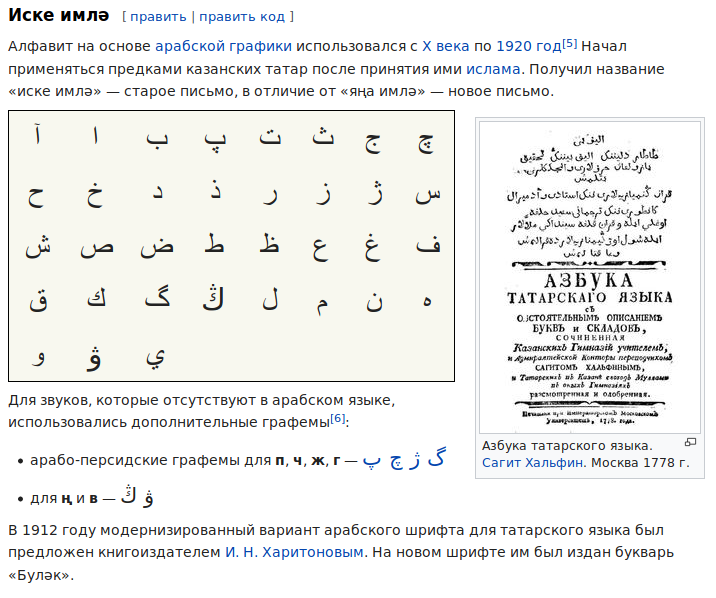
Another alphabet based upon russian alphabet is bashkort alphabet:


another table of bashkort alphabets existing in different periods of XX century:
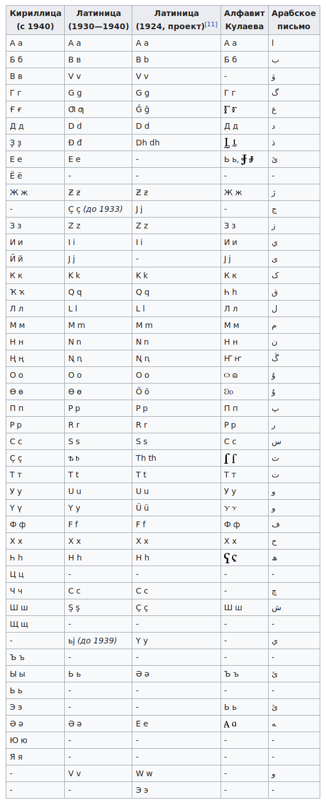

For some time I couldn't figure how k may belong to HIJKLMN cluster other than hikkup is a thing.
Now I can see it's h'
I found it comparing forms of Mike: Mika, Миха, Михаил, Mikael, Michael, ch ~ k
Also returning to that idea of H standing for Ш - more common form of Миха [miha] is Mиша [misha]
I'm crazy. Why? I am crazy! Why? Why is for the future! here I was mad at me because I cut my finger
Greatsy is looking for new ways. Some of those ways are ways off. and I was talking of how we all mad
way is for the future! though being mad damaged or changed my
weg is wil (but I eraseed that typo fest) capabiltiy to think. Why is why for futur?
gilmel = lamel again What is the goal of all these crazy actions?
ג = λ Where are you going with this/ Will you invent the protection
Or you're just bumping around bumping yourself to your grave?
futur is further. Let's create protection from any possible damage. It's concrete spheres
upd: why is not only for the future, but for the context, for the road goas both ways, and if you ask in the past "why did that happen" you ask about the course of events, and they answer with because, which is the same as by course. by is be? War&Peace by Tolstoy = War&Peace is Tolstoy. bi is banks? I was thinking of bystanders so now let's think of bistandards, double standards. standarts in russian they use t there. art stands as standart. etalone
notice how high as the sky I am, my thought travels through my neuronet, catching here & there seekin
Thus will is forward, was is before, would is wood? like if those three or more directions relate to elements of the world, they should correspond. wood is a combination of earth & water, as would is combination of future & past. which is future & which is past? future flows, changes, undefined, past is solid and unchanged as much, uneluding, not dissolved in the sand, which acts as earth in some extent. probably people of the past saw sand as earth without water.. they didn't use withouts. they declared it as earth+fire? let's see it in chinese books:

Nope, they're using way more abstract meanings. And speaking of gods as abstractions in the comprehension of the masses, we may ponder on that later, but looking for the sand in trigrams, futile:
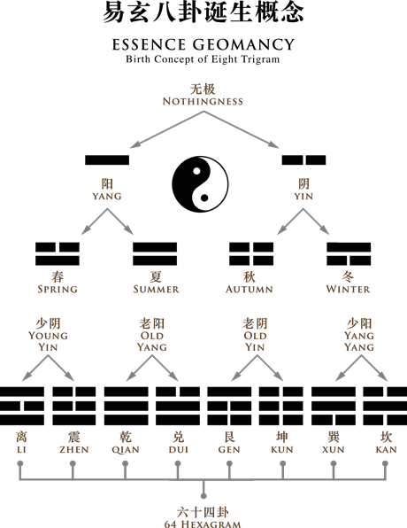
I dare to doubt that summer & winter are not the opposites, Summer & Autumn shouldn't be opposite this way as just bothe monograms switched. I would accept Spring & Autumn as opposites, but not summer & Autumn/ something is wrong here, let's see if it's structural flaw or if that immage is mistaken:
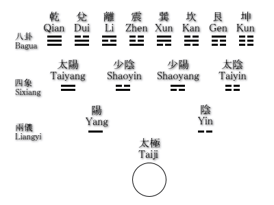
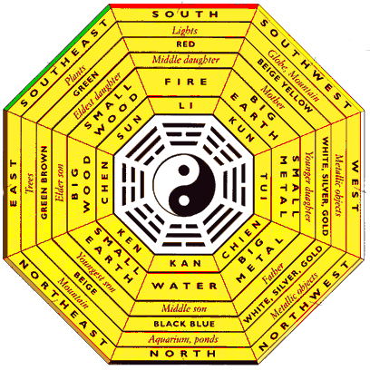


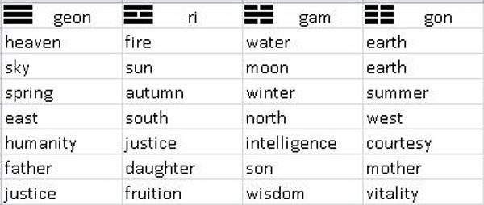


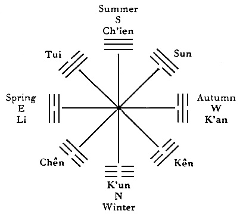


So I searched in chinese for 卦夏季:


And one image told about relation of trigrams to hours of the day, and another one could only tell me what I already knew, but in another perspective, which brought it here.
So for they don't really know what which digram stands for, let's look into that other weird school we stumbled upon in volume I:
dry dead
some branches are dry/ m to g just came, based on the weirdest b ~ g, which is gimel=lamed, thus double c is B so is it just vertical wave, and b is it's staffed form?
M ? M is B as Л is Г. arewn't they those wife & man? I can see it requires explanation, maybe later.
then double Л is М and double C is B and Aᛒᚦ is ABC and D as an invariant of C, it's staved form.
That is why g is G in endlish, but D in russian. G is a voiced form of C. See, roman alphabet is latin as later for it explanes its form way less than runes. And did I say that clueless child will find runes more archaic than even archaic latin. I use archaic instead of old which is entangling text for non-specialists, which is a standart academic symptome originating in a bigger influx of second-language writers.
double Л is М as double C is B
ᚦ is a male strike with an axe. and in huntrit (let's call hunters' taal this way) it's man leaves such marks
ᛒ is some more information, in one blow weak man (arms as wigs) cannot do. Wig man is wicked witch
so have we found the woo root in woman, wife, femakle?
imagine how rude other words for stereotyped categories can be. Nigger is tabooed as we speak, but it only means black in german.. isn't it schwarze? swarzenegger is black пахарь.. black plowman, ploughman, plougher. Pflüger. what is negger really? I was brought about with that concept that schwarzenegger is чёрный пахарь. что было бы странно, учитывая что африканцы не слишком-то пашут, у них и так всё растёт. и египет переводят как чернозём ложно. это на арабском может египет = африка = чёрная земля (земля чёрных) - но возвращаясь к шварцу (который негрь (уголь? несгоревший или негорел.. негрила.. не горилла? )) we humans will probably have to leave these old words away. and leaving in capsules we'll have some other features (may them be good) and gender and ethnicity will be the least of them/ Niger is a name of an african country, so my rude etymologis can be more offensive than the actual ones, but that's how it is heard and subconciously understood, so I don't know if Niger is a word of some african language, but it could be caught out of their language pool for being recognized in some european language wrongly but with a fun banter.
ᚠ ᚡ ᚢ ᚣ ᚤ ᚥ ᚦ ᚧ ᚨ ᚩ ᚪ ᚫ ᚬ ᚭ ᚮ ᚯ
ᚰ ᚱ ᚲ ᚳ ᚴ ᚵ ᚶ ᚷ ᚸ ᚹ ᚺ ᚻ ᚼ ᚽ ᚾ ᚿ
ᛀ ᛁ ᛂ ᛃ ᛄ ᛅ ᛆ ᛇ ᛈ ᛉ ᛊ ᛋ ᛌ ᛍ ᛎ ᛏ
ᛐ ᛑ ᛒ ᛓ ᛔ ᛕ ᛖ ᛗ ᛘ ᛙ ᛚ ᛛ ᛜ ᛝ ᛞ ᛟ
ᛠ ᛡ ᛢ ᛣ ᛤ ᛥ ᛦ ᛧ ᛨ ᛩ ᛪ ᛫ ᛬ ᛭ ᛮ ᛯ
ᛰ ᛱ ᛲ ᛳ ᛴ ᛵ ᛶ ᛷ ᛸ
That theory of axe-taal I just brought equalizes ᚦ to ᚴ which is ocay because A is ᛆ
and ᚲ is a staveless ᚦ, for double ᚲ is ᛃ and ᚭ = ᚮ as that futhark chart declares. which makes boustrophaedon possible but makes ᚿ [n] equal ᛆ [a] and what about ᛐ(ᛏ) [t] and ᛚ [l]? Well these two could be related, for even in latin minuscule t looks like a dashed (dotted?) l (not in this font, in cursive) ᛲ & ᛋ are shin & sin, invariants. So what about ᛆ [a] & ᚿ [n] ? Initial a can stand for no, but what about the phonetic difference (first I wrote it dicfference, but now I decided to cut off the typos. Thinking about what it means to be crazy, I found that some ways are to be cut short. Typose are one of those things. I still leave them, whatever.


Today academia.edu sent my way this work: Alphabet or Abracadabra? Reverse Engineering The Western Alphabet. by Wim J Borsboom (mirror) Which is an independent discovery of the same structure. And if before I made my best to avoid reading other books on the subject, to keep my research as independent (and from the mistakes of the other authors) as possible. Recently I have felt myself way more confident and began spray-buying books on history of writing systems. And nobody seemed to see the obvious symmetries of vowels. The best I could buy is a collection of writing systems of the world without much of describing, but who really needs it on paper when it's hypertexted in the internet. Where you can also find some freaky fellows pulling texts in one language to another (though if we, russians, read texts of older than five centuries we have problems understanding it) so my task is to collect all the primal words, to compare the most simple of them, to understand the phonetic liberties those words allow and if something other than white noise emerges out of that venture, we reconstruct the following language from that scratch.
And the fact that this guy makes his research from scratch is an evidence of this field being just new born. Or I would never heard about him if there was no internet, so who knows how many independent researches like him managed to see AEIOU structure. It's so much in your face sometimes, but people just can't see it, it stunned me when I first witnessed it - as they say, there are those who see, those who see when you show them and those who don't see. And it's tremendous how many of people don't see. Those proverbal 95%.
 And thus only few
of us can see. So all the science is probably carried by those 5%
of people who can see when they're shown. But of course even in
scientific community they're in minority. Or am I just getting too
counterproductively bitter? For I know that some smart people
believe in god for whatever reasons, just as many not so bright
people believe in god for some wrong reasons. The same people who
believe in god living in russia
And thus only few
of us can see. So all the science is probably carried by those 5%
of people who can see when they're shown. But of course even in
scientific community they're in minority. Or am I just getting too
counterproductively bitter? For I know that some smart people
believe in god for whatever reasons, just as many not so bright
people believe in god for some wrong reasons. The same people who
believe in god living in russia used to be atheists while they were living in ussr
Wim J Borsboom uses the following image:
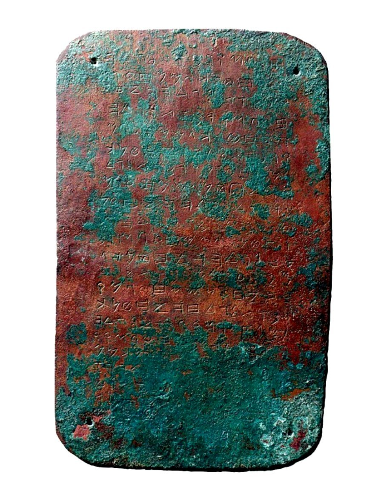
Which I missed not recognizing abecedary in it, leaving it for later when I speak greek.
But it is an abecedary, a plane from a set of four.
But while I was looking for other three, I found an opinion that it is a forgery:
http://preearth.net/phpBB3/viewtopic.php?f=14&t=1181 (mirror)
whether you accept or deny their arguments, it's quite a vault of information on the subject and a rabbit hole I maybe will descend further. But because forgeries are possible, I wanted to focus on modern forms of writing systems (for these symmetries were found in them, so I can research it further using only modern material. But public wanted me to look into what historical linguistics tells on the subject, even though it doesn't actually speak much (and half of that is false, alas))
Wim J Borsboom brings the term Varga to the table, and gives an interesting guess that difference in eastern & western order of writing systems could be caused by those vargas (labial, velar, coronal) misarranged by a traveller who brought them to the west on separate tablets. (he also was confused by some common misconceptions of consonant alphabets & medieval origin of minuscule, which I debunked earlier, so I'll give him a link to this part, so he can patch his approach) which is another explanation of that switch, that it was not by some religious reasons, but by mere accident (which I doubt, because of the reasons I gave before (greek Z for Zeus replacing Θ for Θεά as one of them))
He derives alphabet from India, which is understandable, for hindus do recognize vargas (I'm not sure it's the correct form, I only found it in astrology, but he studies sanskrit, so he probably knows it better) while in western tradition this knowledge seem to be completely lost and only rediscovered here & there and hopefully somewhere else (followin part of this research will probably include more guys & gals excavating these corpus of human concepts)
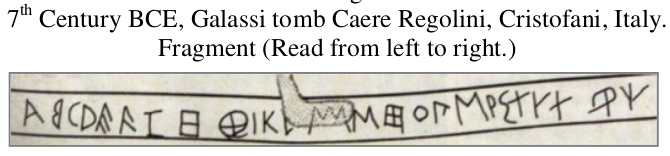
Another image from his work:
brought me this artifact:

with these writings related to it:


I can only guess how the other three lines are related to it. Probably some scholar just compared them.
Where I took it (images are clickable) it said:
description: Bucchero bottle from the regolini-galassi tomb, Caere
catalogue number: 780
LSAG reference: 240.19
date: c. 650 - 600 ?
object type: Bottle
region: WC
sub-region: Euboic Colonies, Italy (Chalkidic-Eretrian)
archaeological context: Caere
publications: Buonamici, Epigrafia Etrusca pp. 104 ff
local script: Non-Greek (Etruscan)
inscription script analysis: not available
transcription: α β γ δ ε ϝ ζ h θ ι κ λ̣ μ̣ ν̣ ξ ο π Μ ρ σ τ υ χ φ ψ Ϻ, not M, those academics! lol i'm mad
I brought this bottle here only to satisfy my urge to collect all the abecedaries in one place (though I hope somebody does it better and before me) and mostly because it represents inverted B, which caught my attention in roman cursive b () and egyptian ìÉÄ (though of course it could be just a scribo, for only right-to-left etruscan seem to write it in reverse. (but once again, who knows if it's forgery or not) though I only know it by looking at what google shows me)
{kind=link}
I think some good ai should look into what that guy could find for of course I am biased to see clearly what he reconstructs (I read it researching so my head got tired when I got half through it, and then I read some more, though I told you not to. And I also typed all these (from "Today academia.edu")
I also shall return to that reading mostly to understand what prevented me from comprehending his argumentation to maybe understand what prevent most of the people from comprehending mine.
Ϻ is san, such an old letter, like jewish צ for it stands there somewhere. But it looks like W, which as Ш
Σ does look like Ϻ rotated counter-clockwise. but it stands at another position, phonetically ~ the same
Ш stands even further. It's like those three forms are spread through the alphabet on some distances:
Z is the opposite of S (probably that's why they needed another stroke on Σ to rotate it into З. is it 3?
ЗΣϺШ such is the order of this abugida. Was it why they had to move Z closer to the E, to make intervals equal? are they equal? we'll check it in a moment.
Isn't E itself rotated Ш? Maybe as 2 mothers of three.
Then there should be 4 of them (one is hidden, as Y from UVW)
What is the third first? M!
З [Z] must be the fourth. twice more linguals than labials!
ЗШ are ZH of the greek alphabet?
E is in the same line!
F, f? or Θ, θ? (I was looking for the labial, and both letters which are left are labial. was it an attempt to make the count even?
like if linguals are doubled, let's double the labials too? thus MN? PQ bothe N & Q are still linguals, but they could have that M pronounce to them, so could russian юсы & french nasals be of that origin?)
We russians we didn't care if it was Ff or Θθ, we drew both as Ѳѳ and draw as Фф today. Θεά is Фея
(I think I should notice that more usually (for more modern words) they use Т instead of Ф
Θ looks like ט in jewish alphabet. And ט is recognized directly as T. Θ is taught to be T in universities.
So second row in greek is three mothers? and fourth additional one. And somethimes there are 6 of 'em
Then every other line is three mothers.
We saw it in ABC (·õÜ·õí·ö¶ shows that ᚦ is bothe c & d: staveless ᚦ is ᚲ. Oh I have some nerve! It's freaky)
ᚦ standing for both d & D shows that boustrophedon is possible. As we saw it before I think in this tome
ᚦ (þ probably is [θ] in icelandic but Δ is [ð] in greek. was it the exact pair how linguals doubled in voiced & voiceless? For M & W are always M & W then F is V? no, there was not W when F was V for it was the W, as they transcribe it in phoenician. But do they translate it correctly? I should really sustain modern writing traditions, restraining from ancient reconstructed ones, for mistake is always there just as here I probably make many;)
one of them could well just be coming up. take it as poetry., etymologic dictionaries have mistakes too.
Is "to die" like an euphemism? Like "to dye" like with your blood. And even if you fall, bleed somewhere else, don't dye the furs of tiger, mammoth or whoever gotcha. Or whatever they wear, like not to smell of blood, not to disturb the animals, not to let them smell you. So hunters wore furs initially just to cover their smell with smell of that animal whose skin they put upon? To steal u stealthly. It's a horror bably, the ancient horror of stealing cubs wearing their mother's skin. boy, wicked.
See how baby is related to babble. babbling babbly baby babé
Dubious? Maybe. But it will help foreigners to never forget the word babble. Petersonian truth, huh

those russian flags, meh, I should start using memeflags, as a protest agains russian government supporting commie regimes across the globe, for themselves secretly being a commie regime.
They have some nerve, or they just didn't read Milton Friedman scientifically proving that the less state intervenes the economy, the better is the economy. He did it through centuries & continents, but I onlly read some of his short ones when I was around 17, and I got it instantly, because I had the bright example of soviet economy before me (don't trust their propaganda or statistics. numbers for 1983-1988 were published in 1982 (I don't remember the exact years, they depend on their five-year plan. So they published digits they planned to achieve, but as far as I know, not a single plan was fulfilled)) though if I didn't read or heard of his research, I would think soviet decay was caused by discouragement of initiative & free enterprise, but he made even broader conclusion, I think he's right, because in today's beautiful russsia of the future government doesn't prohibit free enterprise, but they regulate it to near-death and those regulation are also corruptly arbitrary which actually can be both good and bad for any special case, but it's all not helping the common economy, au contraire.
The translator used double negation, but you've got the point
And though these things may be more important than what we research here, there might be some political games, but luckily not for long. Their service is no longer needed and will be substituted with ai-powered society of free entrepreneurs. or maybe we all won't even have to hustle for entrepreneurs among us will take care of communities around them, providing free place & power to create our own food by printing them, while those entrepreneurs' ais would be surveilling his neighbours via microscopic spy-drones that nobody produces too much of explosives or doing some other dangerous stuff. and thus those entrepreneurs would be watching eachother, keeping their surveillance in open sometimes, so everybody is watching eachother and hivemind whatever challenge they're facing, so no big daddy or big brother is needed anymore. It's not even that much of the future, it's the present unfolding in front of us.
OPRST (as it is in russian & greek)
Greeks used to have Ϻ where lating has Q and in variants closer to phoenician, also Ϙ after Ϻ
These addditional letters made sense for together with Ϝ it addded alphabet up to 27 which was 9+9+9, which was their numeral system of 999 similar to roman numerals because both had cycle in 1000.
I wrote about it before, they used overlines to multiply numbers by powers of 1000.
So they didn't even need sampi, which makes me think hm.. have sampi (ϡ) ever existed? Isn't it San sent to the back of the chart as they did to many other letters? And the following image says ϡ could be exactly Ϻ, and another one tells that Ϻ could be exactly Σ:
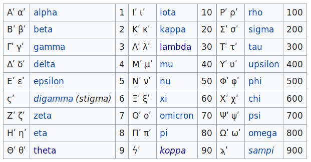

Sicyonian is from Sikyon:
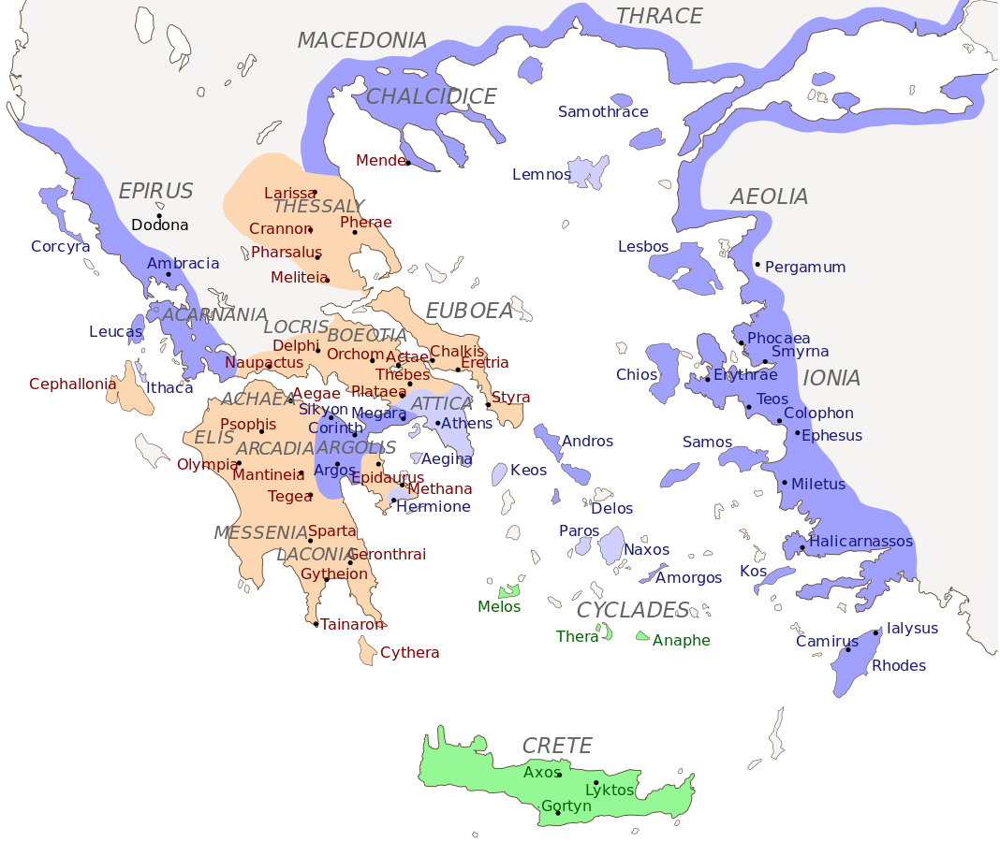
AEOLIA has to be special. It consists almost completely of vowels, and their order is AEO, very alphabetic.
IONIA also includes only one consonant, but Aeolia has more of them, and L is somewhat more vowel, even though N looks like И & H is its invariant is vowel in greek and И used to be H.
L looks like I though. Ionia & Aeolia are such similar names, as if they are dialects of the same thing. Like yea, they're both greek dialects. But how could Ionia be even not in Athen's, but in Anatolia, how could its dialect become the official one?
Though I see explanation in the comment to that image:
But the first attempt to find this book brought be some Cambridge book for £64.99 and with no Kirchhoff. All this is so tiresome. Next search brought me 1 Used from $38.92 + about the same price I will have to pay to putin's post-office. Thanks, but no thanks. https://reader.digitale-sammlungen.de/de/fs1/object/display/bsb10585083_00037.html (mirror) and that lawyer world makes us all lie Ja to
Ich versichere, die Nutzungsbedingungen gelesen zu haben und die heruntergeladene Datei ausschließlich für nichtkommerzielle Zwecke zu verwenden.arrowNutzungsbedingungen (Europeana Rights) for something older than 150 years for fuck sake! Maybe some day I know german and read it.
And Ϻ and Σ are indeed invariants:
San (Ϻ) was an archaic letter of the Greek alphabet. Its shape was similar to modern M, or to a modern Greek Sigma (Σ) turned sideways, and it was used as an alternative to Sigma to denote the sound /s/. Unlike Sigma, whose position in the alphabet is between Rho and Tau, San appeared between Pi and Qoppa in alphabetic order. In addition to denoting this separate archaic character, the name "San" was also used as an alternative name to denote the standard letter Sigma.
will be continued and edited back and forth.